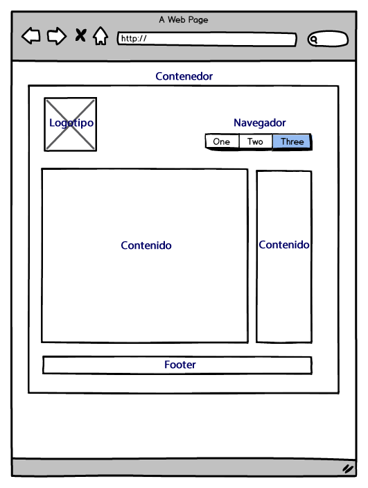

Extructura de informacion web
Escrita por Fernando Martinez
La importancia de la extructura
La estructura de un conjunto de páginas web es muy importante,
ya que una buena estructura permitirá al lector visualizar todos
los contenidos de una manera fácil y clara, mientras que un conjunto
de páginas web con una mala estructura producirá en el lector
una sensación de estar perdido, no encontrará rápidamente lo que
busca y terminará por abandonar nuestro sitio.
Planificacion
Antes de crear un conjunto de páginas web uno ha de tener una
idea clara de cómo va a ser la estructura de dichas páginas,
es conveniente hacer algún esquema sencillo, para la mayoría
de los casos una hoja de papel y un lapicero bastará, pero si el
emplazamiento va a albergar un gran número de páginas es recomendable
usar algún tipo de programa que permita manejar estructuras de tipo grafo.
Informacion
No es lo mismo crear una estructura de navegación para un sitio que
desea publicar información al estilo de un libro cuya estructura estará
formada por capítulos, este tipo de información se adapta bastante bien a una
estructura lineal como jerárquica. Mientras que un sitio donde se expone
un tutorial o un tour es más apropiada una estructura de tipo lineal.
Diseño
La página web y su constitución Lo que define el diseño de una página web
es la forma de organizar los elementos que la componen. Hay miles de formas diferentes,
pero son pocas las que funcionan y adquieren el sentido que necesitamos para nuestro trabajo.
Podemos recurrir a estructuras como Bootstrap o 960grid para tener un apoyo importante.
Hoy en día hay muchos frameworks con los cuales podemos basarnos a la hora de diseñar un nuevo proyecto.
Básicamente, los sitios web se componen y estructuran de la siguiente manera:

Contenedor
Esto es lo que definimos en la regla Body o en algun div de nuestra estructura.
Dentro de este contenedor estarán todos los elementos del sitio; módulos, contenidos, imágenes, etc.
Este contenedor puede tener un ancho fijo; el ancho será igual para todos los navegadores y dispositivos,
o uno fluido que se adaptará al ancho de nuestra ventana. Si usamos web responsive, podemos manejarlo con CSS sin problemas.
Logotipo
Acá es dónde debemos dejar la imagen de la empresa, que identificará la marca en todo el sitio.
Puede ser el logotipo de la empresa o el nombre. Al estar arriba acompañara la navegación por
todo el sitio ayudando al reconocimiento de la marca.
Navegacion
Que importante es la navegación y el menú que la contiene. La forma más aceptada y fácil,
es el menú horizontal, que siempre tiene a mano lo más importante del sitio web.
Los menús verticales pueden usarse como complementos o sub menús, de los horizontales,
y siempre cerca de la línea horizontal del menú principal y deben ser visibles en el primer pantallazo, al entrar.
Contenido
Lo más importante y fundamental de una buena página. Lo que mantiene al visitante cautivo e interesado.
Si el contenido es malo o poco interesante, abandonará la página en pocos segundos. Para eso,
debe estar centralizado y enfocado y a la primera vista. El mejor lugar debe ser para los contenidos.
Para Google, el contenido es el rey.
Footer
Localizado al final del sitio, abajo, generalmente dejamos ahí información de Copyright y legales o
menús secundarios. Aunque en los últimos años, se usa mucho para incluir información de redes sociales, direcciones, noticias.
Espacio negativo
Esto es tan importante como el espacio positivo. También llamado espacio blanco, es todo lo que no tiene
información de ningún tipo, pero que cumple un rol importantísimo para la web; nos ayuda a tener espacios de respiración,
a equilibrar y dar balance a todo el diseño. Si eres novato, o tu cliente es ignorante en la materia,
tratará de llenar esos espacios, con la consiguiente saturación de contenidos, dejando una web ilegible e innavegable.